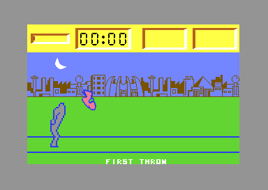
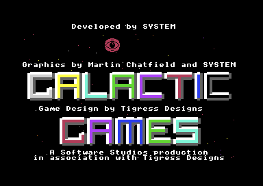

<meta charset="utf-8">
<meta name="viewport" content="width=device-width, initial-scale=1">
<title>Galactic Games</title>
<link rel="preconnect" href="https://fonts.googleapis.com">
<link rel="stylesheet" href="https://fonts.googleapis.com/css2?family=Lato:wght@400;700;900&family=IBM+Plex+Mono:wght@400;500&display=swap">
<style>
:root{
  --bg:#23262d; --paper:#e9e7e1; --surface:#ffffff; --surface-2:#f1efea; --line:#d5d3cc; --line-soft:#e0ded8;
  --ink:#2f3136; --ink-soft:#55585f; --ink-mute:#80838a;
  --link:#1f5fa8; --link-hover:#154480; --accent:#1f5fa8;
  --amber:#c25a00; --cyan:#1f5fa8; --coral:#d04a3a; --green:#2a8a4a; --violet:#4a5bd6; --hl:#fff0c2;
  --chip:#2f3136; --chip-ink:#ffffff;
  --c64blue:#40318d; --c64grey:#686868;
  --fd:'Lato',system-ui,sans-serif; --fb:'Lato',system-ui,sans-serif; --fm:'IBM Plex Mono',ui-monospace,Menlo,monospace;
  --col:1080px; --gx:68px; --fs:17px; --lh:1.6; --hw:900; --h1:46px; --h2:26px; --sy:48px; --pp:26px; --r:10px;
  --plate-shadow:0 1px 2px rgba(0,0,0,.05),0 4px 14px rgba(0,0,0,.05);
}
*{box-sizing:border-box}
html{background:var(--bg);min-height:100%}
body{background:var(--paper);color:var(--ink);font-family:var(--fb);font-size:var(--fs);line-height:var(--lh);max-width:var(--col);margin:0 auto;min-height:100vh;padding:0 0 4rem}
h1,h2,h3{font-weight:var(--hw);letter-spacing:-.01em;text-wrap:balance;color:var(--ink);margin:0}
.wrap{padding:0 var(--gx)}
.hero{padding:48px var(--gx) 8px;text-align:left}
.eyebrow{font-family:var(--fm);font-size:12px;letter-spacing:.08em;text-transform:uppercase;color:var(--ink-mute);margin:0 0 10px}
.hero h1{font-size:var(--h1);line-height:1.15;letter-spacing:-.02em;margin:0 0 14px}
.hero .sub{margin:0 0 .6em;color:var(--ink-soft)}
section{padding:var(--sy) 0 24px}
section:last-of-type{border-bottom:none}
.fig{font-family:var(--fm);font-size:12px;letter-spacing:.08em;text-transform:uppercase;color:var(--ink-mute);margin:0 0 10px}
h2.t{font-size:var(--h2);margin-bottom:12px}
.lede{color:var(--ink-soft);margin:0 0 30px}
.plate{background:var(--surface);border:1px solid var(--line);border-radius:var(--r);padding:var(--pp);box-shadow:var(--plate-shadow)}
.cap{font-size:14px;color:var(--ink-mute);margin-top:14px;line-height:1.55}
.cap b{color:var(--ink);font-weight:700}
code{font-family:var(--fm);font-size:.82em;background:var(--chip);color:var(--chip-ink);border-radius:4px;padding:2px 6px;overflow-wrap:break-word;-webkit-box-decoration-break:clone;box-decoration-break:clone}

.plate{margin:0 0 22px}
sup.fn{font-size:.7em;line-height:0}
sup.fn a{text-decoration:none}
sup.fn + sup.fn::before{content:","}
.overview-shot{margin:22px 0}
.overview-shot img{width:100%;max-width:768px;height:auto;aspect-ratio:384/272;image-rendering:pixelated;display:block}
.overview-shot figcaption{font-size:14px;color:var(--ink-mute);margin-top:8px;max-width:768px}
.gg-px{image-rendering:pixelated;display:block;max-width:100%;height:auto;margin:0 auto 10px}
.gg-wide{width:100%}
.gg-read{font-family:var(--fm);font-size:13px;background:var(--surface-2);border-radius:6px;padding:8px 12px;margin:8px 0 10px}
.gg-two{display:grid;grid-template-columns:1fr 1fr;gap:16px;align-items:end}
.gg-two figure{margin:0}
.gg-two figcaption{font-family:var(--fm);font-size:12px;color:var(--ink-mute);text-align:center}
.gg-lab{display:block;font-family:var(--fm);font-size:13px;color:var(--ink-soft);margin:10px 0 4px}
.gg-range{width:100%;max-width:520px;display:block}
.gg-table{border-collapse:collapse;font-size:15px;width:100%;margin:0 0 12px}
.gg-table td,.gg-table th{border-bottom:1px solid var(--line-soft);padding:6px 8px;text-align:left;vertical-align:top}
.gg-scroll{overflow-x:auto}
@media (max-width:760px){:root{--gx:16px;--h1:36px;--pp:14px}.gg-two{grid-template-columns:1fr}}
.gg-map{display:block;image-rendering:pixelated;cursor:crosshair;max-width:none}
.gg-check{display:flex;align-items:center;gap:6px;margin-left:10px;font-family:var(--fm);font-size:13px}
.gg-judo{display:grid;grid-template-columns:auto 1fr;gap:16px;align-items:start}
.gg-judo canvas{max-width:100%;height:auto;cursor:crosshair;image-rendering:auto}
.gg-shields{display:flex;flex-wrap:wrap;gap:6px;align-content:flex-start}
[data-own-look] .gg-shields button,[data-own-look] .gg-run button{font:500 13px var(--fm);padding:6px 10px;border:1px solid var(--line);border-radius:6px;background:var(--surface);color:var(--ink);cursor:pointer}
[data-own-look] .gg-shields button[aria-pressed="true"]{background:var(--btn-on-bg);color:var(--btn-on-ink);border-color:var(--btn-on-line)}
.gg-run{display:flex;gap:8px;flex-wrap:wrap}
[data-own-look] .gg-run button{min-width:96px;padding:10px 14px}
.gg-bar{height:16px;background:var(--surface-2);border:1px solid var(--line);border-radius:6px;overflow:hidden;margin:12px 0 0;max-width:520px}
.gg-bar div{height:100%;width:0;background:repeating-linear-gradient(45deg,#c25a00 0 6px,#e08a3c 6px 12px)}
@media (max-width:760px){.gg-judo{grid-template-columns:1fr}}
</style>

<!-- tabs -->
<header class="hero">
  <p class="eyebrow">Commodore 64 · 1987 · Activision</p>
  <h1>Galactic Games</h1>
  <p class="sub">The Olympics, held far from Earth: a race between worms, hockey with black holes for goals, judo fought with the mind, a contest for throwing your own head, and a marathon for a creature that changes shape. The reviewers found it weird, and mostly dire.</p>
</header>
<main class="wrap">

<section id="game">
  <h2 class="t">Sport for the bizarre physical forms of the Galaxy</h2>
  <p>The manual presents the Galactic Games as the successor to our Olympics, "the true pinnacle of stellar sport", held "every 0.00002 of a galactic revolution" by the Astronomical Athletics Association. Its events use "the bizarre physical forms that inhabit the Galaxy", and are "just that little bit different". The Games' flame is lit by a plasma bomb and carried by warp cruiser from the site of the first Games.<sup class="fn"><a href="about.html#src-1" title="The instructions">1</a></sup></p>
  <figure class="overview-shot"><figcaption>The loading screen, while the rest of the game comes in from side 1 of the disk (<a href="graphics.html#loading">Graphics</a>).</figcaption></figure>
  <p>There are five events, and the athletes are aliens. In <a href="gameplay.html#slither">100m Slither</a> two racing worms bunch and stretch down a track, cooled by their own slime. <a href="gameplay.html#hockey">Space Hockey</a> is played by spheres, with a black hole at each end of the field and a puck that is alive and does not want to fall in. In <a href="gameplay.html#judo">Psychic Judo</a> two mindbenders throw bolts of mental energy at each other and block them with shields. A Hruntan's head comes off, so <a href="gameplay.html#head">Head Throwing</a> is a contest to throw it furthest, flapping its ears for lift. And in the <a href="gameplay.html#marathon">Metamorph Marathon</a> a creature that can become a runner, a flyer, a digger, or a spring races over <a href="levels.html">an obstacle course</a> against the clock.</p>
  <p>The first four are for two players, or one against the computer; in the Marathon two players take turns. A <a href="gameplay.html#championship">Galactic Championship</a> runs all five in a row and keeps the champion's name on the disk. Before every event a commentator types an introduction on the menu screen, letter by letter, and after it a remark on how it went.</p>
  <figure class="overview-shot"><figcaption>Head Throwing: the head in flight, and the body that threw it. The two are drawn with the same <a href="graphics.html#head">eight sprites</a>, the body first and then the head.</figcaption></figure>
</section>

<section id="makers">
  <h2 class="t">The people behind the game</h2>
  <p>The game's own credits screen, shown while side 1 loads, names three groups and one person: "Game Design by Tigress Designs", "Developed by SYSTEM", "Graphics by Martin Chatfield and SYSTEM", and "A Software Studios production in association with Tigress Designs" (<a href="graphics.html#loading">Graphics</a>). GameBase64 also gives the graphics to Martin Chatfield and has no programmer or musician.<sup class="fn"><a href="about.html#src-4" title="GameBase64">4</a></sup> Software Studios was a development team behind many Activision titles of the time.<sup class="fn"><a href="about.html#src-7" title="Exotica, Software Studios">7</a></sup></p>
  <p>Tigress is a small puzzle. MobyGames calls it Tigress Marketing and lists four games: Galactic Games, <i>Deactivators</i>, <i>They $tole a Million</i>, and <i>Think!</i><sup class="fn"><a href="about.html#src-5" title="MobyGames">5</a></sup> The Wikipedia article on <i>Deactivators</i> says Tigress was co-founded by David Bishop, that a company called System Software did the programming, and that Tigress closed soon after that game came out in 1986,<sup class="fn"><a href="about.html#src-6" title="Wikipedia, Deactivators">6</a></sup> a year before this one bears its name. The SYSTEM of the credits may be the same System Software, but no source found says so.</p>
  <p>Galactic Games came out for the Commodore 64 and the Amstrad CPC in 1987 and for the Spectrum in 1988, all published by Activision, and in 1990 Alternative Software sold it again at a budget price.<sup class="fn"><a href="about.html#src-5" title="MobyGames">5</a></sup><sup class="fn"><a href="about.html#src-8" title="Spectrum Computing">8</a></sup> One manual covered all three machines.<sup class="fn"><a href="about.html#src-1" title="The instructions">1</a></sup> No interview with anyone who made it was found.</p>
  <figure class="overview-shot"><figcaption>The credits, which replace the copyright lines once FIRE is pressed on the loading screen.</figcaption></figure>
</section>

<section id="reception">
  <h2 class="t">"Weird and wacky, but unfortunately also pretty dire"</h2>
  <p>Both big Commodore magazines reviewed it in February 1988, at £9.99 on cassette. <i>Zzap!64</i>'s two reviewers gave it 42 per cent. One called it "weird and wacky – but unfortunately it's also pretty dire", with sluggish controls, a laborious multiload, and a "humourous" printout that repeated itself; the other found the controls finicky and the graphics "horribly naff on psychic judo", but the game "fun to play – for a while". The verdict: "A mixed bag of naff 'sports' events."<sup class="fn"><a href="about.html#src-2" title="Zzap!64 34">2</a></sup> On sound it scored 32 per cent, for "a few annoying effects and no tune": the code bears that out, since every event's sound driver plays only effects.</p>
  <p>Ken McMahon in <i>Commodore User</i> gave it 4 out of 10. The events "hardly measure up to Olympic standards", he wrote, though head throwing was "a good laugh"; his copy of the Metamorph Marathon would not load, and at full price the game "doesn't have it".<sup class="fn"><a href="about.html#src-3" title="Commodore User 53">3</a></sup> Both reviews mention the comic introductions before the events, which the menu's commentator types.</p>
</section>

<section id="hidden">
  <h2 class="t">What the reviewers did not see</h2>
  <p>Under the naff graphics are some quiet surprises. Space Hockey has a <a href="discoveries.html#pause">pause key</a> the manual never mentions. The manual gets the keyboard's <a href="discoveries.html#keys">left and right the wrong way round</a> and promises a <a href="discoveries.html#quit">quit prompt</a> that the game wrote and never shows. Head Throwing can <a href="discoveries.html#draw">call a draw when player one has won</a>, the Marathon can <a href="discoveries.html#marathon-best">forget player two's best time</a>, and Psychic Judo's records <a href="discoveries.html#judo-minutes">lose their minutes</a>. And four of the event files carry <a href="discoveries.html#leftovers">an earlier build of Psychic Judo</a>, left in when they were saved.</p>
  <p><a href="graphics.html">Watch the worm's eleven animations and the Metamorph's five forms</a>, <a href="levels.html">explore the Marathon's course</a>, or <a href="gameplay.html#judo">throw a psychic bolt at a shielded body</a>.</p>
</section>
</main>
